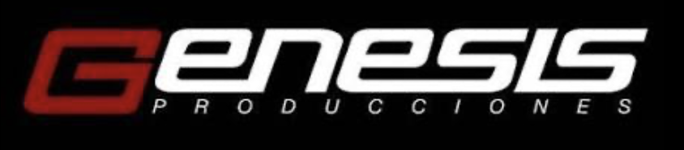
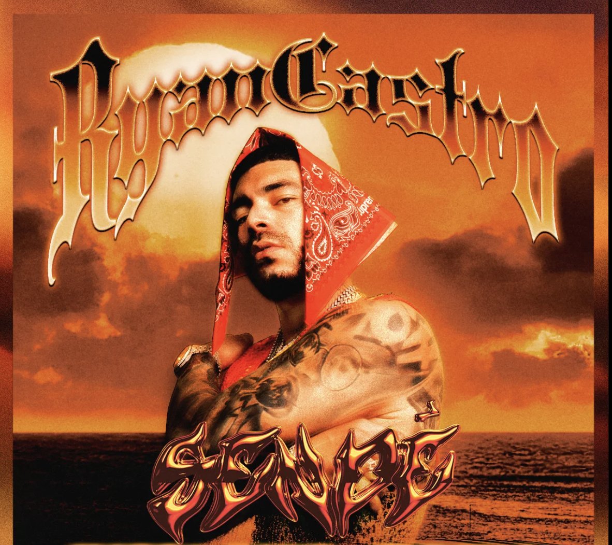
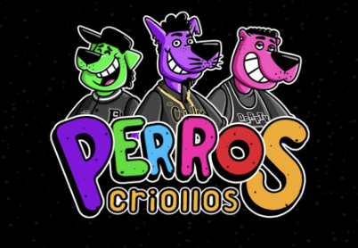
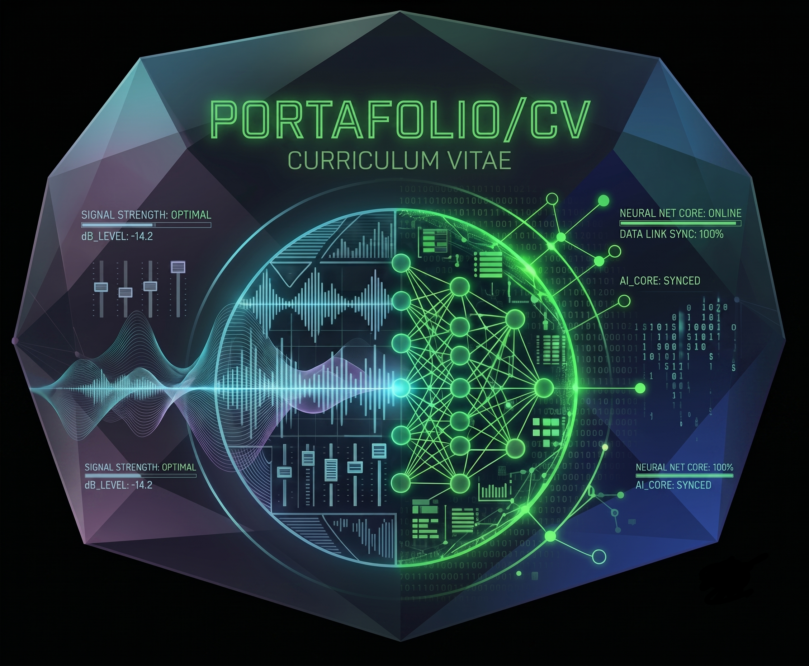
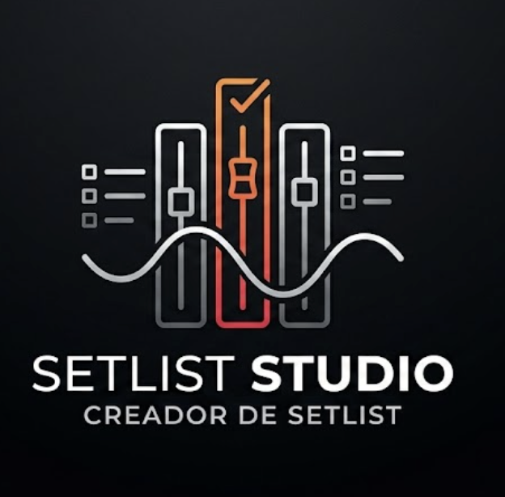

Contacto
Redes Sociales
ECOSISTEMA TECNICO DE MICHAEL DAVID
🎛️ Audio & Stage Manager
Habilidades
🎓 Educacion Superior
- Tecnólogo en Informática Musical Ver Diploma
📂 Proyectos Destacados

Genesis Producciones
Tecnico de Sonido-Coordinación y operación de audio para empresa de renta líder en el país.

RYAN CASTRO -Artista Internacional
Stage Manager / Ingeniero de Monitores.
Alcolirykoz - Artista Internacional
Stage Manager

Perros Criollos - Artista Internacional
Stage Manager / Ingeniero de Audio.
ℹ️ Experiencia Técnica
+11 Años De Experiencia Construyendo Experiencias en los Escenarios más Grandes
Soy Tecnólogo en Informática Musical. Durante más de 11 años, mi oficina han sido los eventos masivos, giras internacionales y conciertos de estadio.
Me especializo en el Stage Management y la operación avanzada de consolas de sonido. Cuando el margen de error es cero, ahí es donde mejor funciono: liderando equipos técnicos, resolviendo problemas críticos en tiempo real y absorbiendo la presión para que el resultado final sea una ejecución técnica perfecta.
Mi compromiso es el mismo desde el día uno: aportar soluciones, liderazgo y excelencia, mientras sigo evolucionando para dominar nuevos desafíos tecnológicos y logísticos.
📜 Cursos
- System & Workflow L ACUSTIC Ver Certificado
- Drive Sytem L ACUSTIC Ver Certificado
- SoundVision L ACUSTIC Ver Certificado
- Sitemas Inalambricos Pro Nivel Shure Ver Certificado
- Shure Master Class: Mejores Prácticas y Técnicas Inalámbricas Ver Certificado
- Certificación Dante Level 1 (Audinate) Ver Certificado
- Certificación Dante Level 2 (Audinate) Ver Certificado
💻 Programación & Arquitectura
Habilidades
📜 Certificados
- Computacion Basica Ver Certificado
- Fundamentos de CSS Ver Certificado
- Fundamentos de Ingenieria de Software Ver Certificado
- HTML Ver Certificado
- Introduccion a la Web Ver Certificado
- JAVA SCRIPT: Manipulacion del DOM Ver Certificado
- Programacion Basica Ver Certificado
📂 Proyectos Destacados

Portafolio Interactivo
Este mismo portafolio, construido con HTML, CSS y JS puro y más.

Setlist Studio
Una App que gestiona, crea, edita y exporta setlists para conciertos, de una o varios artistas, con sus canciones y sus respectivas notas técnicas.
Ver Appℹ️ Experiencia Técnica
Menos manuales. Más ejecución.
Vengo de un mundo donde el entorno no perdona errores y donde tienes segundos para encontrar un fallo, entender el flujo y solucionarlo en tiempo real. Esa misma intuición para conectar sistemas bajo presión es la que hoy aplico al desarrollo de software y la arquitectura en la nube.
No sigo un manual tradicional, pero soy un aprendiz acelerado: me dan una tecnología que no conozco el lunes, y el viernes ya estoy probando código funcional. Sé que me queda camino por recorrer, pero mi ritmo de aprendizaje y mis ganas de romper cosas para entenderlas son el motor que aporto a cualquier equipo.
🗄️ Bases de Datos
Habilidades
📜 Certificados
- Fundamentos de Bases de Datos Relacionales Ver Certificado
📂 Proyectos Destacados

Inventario de Equipos
Diseño de BD relacional para gestionar equipamiento de audio.
ℹ️ Experiencia Técnica
Diseño conceptual de tablas, relaciones (1:N, N:M) y consultas para organizar información técnica.
🌐 Redes & Seguridad
Habilidades
📜 Certificados
- Redes y Seguridad Ver Certificado
📂 Proyectos Destacados

Despliegue Web (CI/CD)
Automatización del despliegue de sitios web usando GitHub Actions.
ℹ️ Experiencia Técnica
Conocimientos en subnetting, asignación de IPs fijas/DHCP para redes locales de escenario y servicios Cloud.
📚 Estudios Complementarios
Certificaciones, cursos y otros conocimientos
📜 Cursos
- Ventas B2B Ver Certificado
- Gestión de Proyectos con Jira Ver Certificado
- Creación de Portafolios y CVs Ver Certificado
- Marca Personal Ver Certificado
- Introducción a la Inteligencia Artificial Ver Certificado
- Fundamentos de Matemáticas Ver Certificado